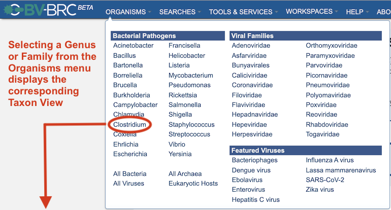
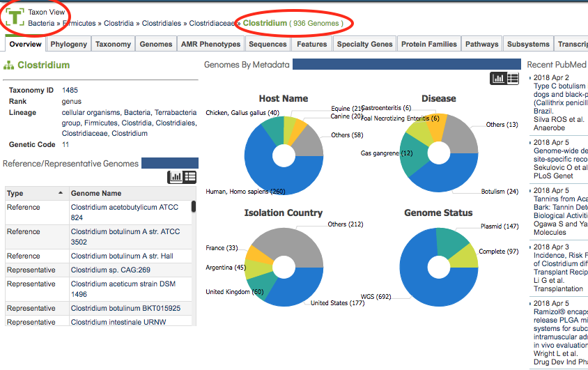
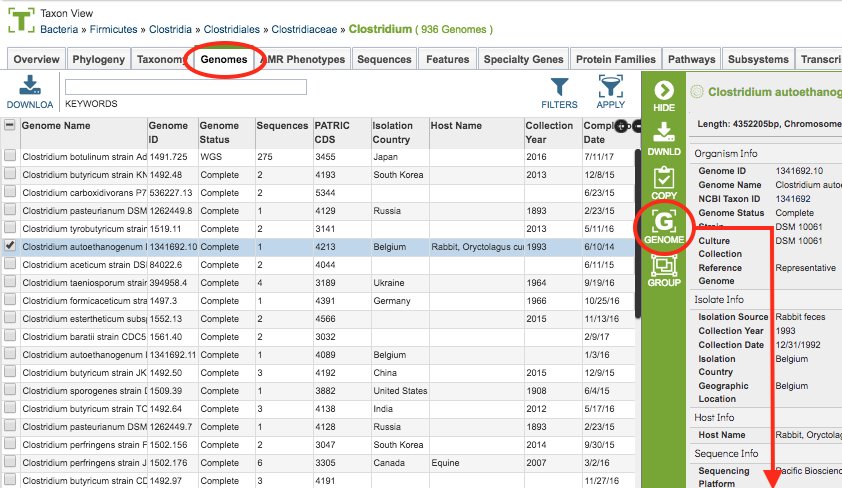
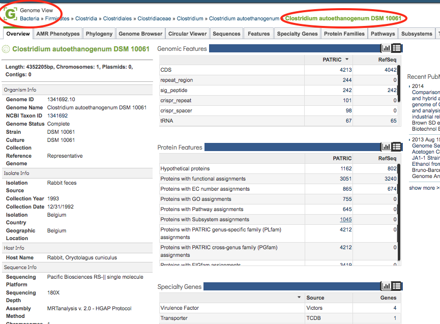
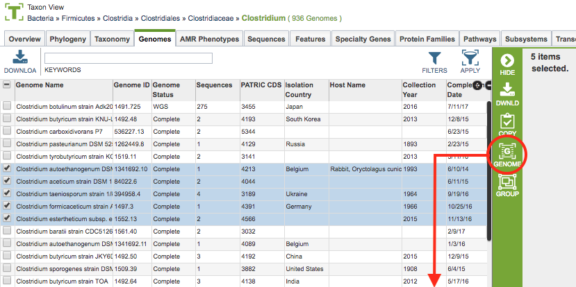
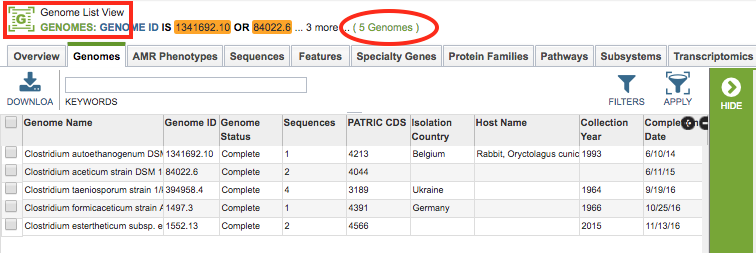
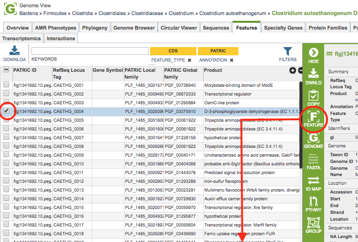
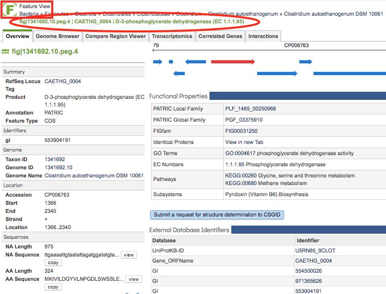
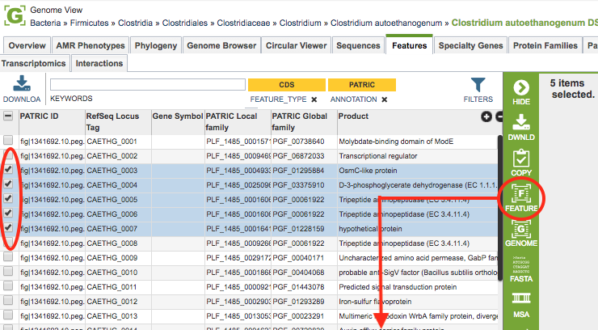
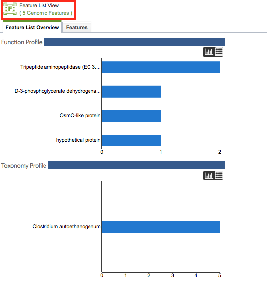

Website Views¶
Overview¶
The BV-BRC website is designed to provide context-sensitive data access and functionality such that when a particular taxon, genome, feature (gene), or group is selected, the surrounding data tabs, tables, and tools are filtered to relevant data for the selection. This is accomplished through focused “Views,” as described below:
Genome-Based Views¶
Taxon View: All genomes within the selected taxon level and related data
Genome View: Single annotated genome and related data
Genome List View: All genomes within a selected list and related data
Genome Group View: All genomes within a created group and related data
Taxon View¶
The view type is automatically generated based on the selection. For instance, when one of the genera is chosen from the Organisms menu, the Taxon View is displayed, and all of the data tabs (Overview, Phylogeny, Genomes, Features, etc.) contain the genomes and related data within that taxon. As illustrated below, selecting Clostridium from the Organisms menu displays the Taxon View for Clostridium.


Genome View¶
Similarly, selecting a single genome in the Genomes Tab and then clicking the Genome View icon in the Action Bar displays the Genome View. Now all of the data tabs contain data and information for that selectec genome only, as illustrated below.


Genome List View¶
Alternatively, selecting multiple genomes in the Genomes Tab and then clicking the Genome List View icon in the Action Bar displays the Genome LIst View. Now all of the data tabs contain data and information for that set of genomes, as illustrated below. The Genome Group View works the same way except that the list of genomes comes from a saved group.


Feature-Based Views¶
Feature View: Single genomic feature (gene, etc.) and its related data
Feature List View: All features within a selected list and related data
Feature Group View: All features within a created group and related data
Feature View¶
Selecting a genome in the Features Tab and then clicking the Feature View icon in the Action Bar displays the Feature View. Now all of the data tabs contain data and information for that feature only, as illustrated below.


Feature List View¶
Alternatively, selecting multiple features in the Features Tab and then clicking the Feature List View icon in the Action Bar displays the Feature List View. Now all of the data tabs contain data and information for that set of features, as illustrated below. The Feature Group View works the same way except that the list of features comes from a saved group.

